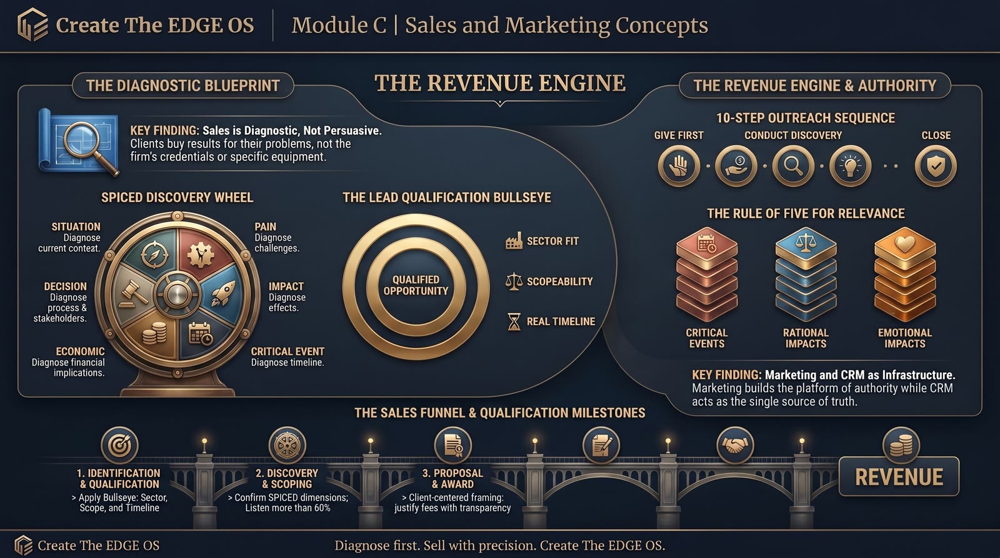

Create The Edge Associates, Inc. · Internal Use Only · 2026
MODULE C · BRIEFINGS
Watch and Listen
Section Briefings
Watch the video, listen to the podcast, then read the module. The same sales philosophy in three formats.
Video · Create The Edge Sales Training
The philosophy, frameworks, and tools behind revenue at Create The Edge.
Audio · How Create The Edge Doubled Revenue Through Diagnostic Selling
The full sales methodology, narrated.
Module C · Strategy Infographic

MODULE C · PHILOSOPHY
C.1 · The Sales Philosophy
The Create The Edge Sales Philosophy
Sales at Create The Edge is not about persuasion, promotion, or pitching features. It is about diagnosing problems and delivering solutions. Before a word of any proposal is written, the work of sales is already underway: listening, learning, and earning the right to be trusted.
The foundational belief that shapes everything at Create The Edge is this: the client does not buy Create The Edge, and they do not buy professional services equipment. They buy results to their problem. This distinction determines how every conversation is conducted, how every proposal is written, and how every relationship is maintained.
When proposals were modified to reflect what the customer wants rather than what Create The Edge is, clients responded by saying: "You get us." That shift directly drove the improvement in conversion rate from 5:1 to 1.2:1, and ultimately a doubling of revenue.
Figure C.1.1 · Five Core Beliefs That Drive Create The Edge Sales
The sale is made when the customer is thinking, not when you are talking. Listening is not passive. Every question you ask is more powerful than any statement you make.
Remove "Create The Edge" from the center of every conversation. Start with the client's situation. Let your expertise surface through your questions and understanding.
Numbers are either black or red. Sales performance is fully visible. The goal is either met or it is not. This creates clarity, not pressure.
Independence is a rational driver for trust.Create The Edge maintains no manufacturer affiliations and sells no equipment. This is a sales asset, not just a business model choice.
Authority is demonstrated through accuracy, not assertion. The consultant who speaks with precision earns trust faster than the one who speaks with volume.
Figure C.1.2 · Inbound vs. Outbound: Two Different Sales Postures
Type
What It Means
Primary Sales Priority
Inbound
The relationship is already established. The client calls because they know the firm's reputation.
Confirm scope, confirm timeline, move to proposal efficiently.
Outbound
The relationship does not yet exist. Requires active listening, empathy, and demonstration of authority through discovery.
Earn trust before proposing. Listen first. Diagnose before prescribing.
▦ Rule of the House
The client is not the expert. That is why they are coming to you. Never mistake a client's confidence in their own industry for expertise in professional services or specialty design consulting. They need your knowledge. Deliver it with authority, not with apology.
MODULE C · PHILOSOPHY
C.2 · The Sales Funnel
The Sales Funnel at Create The Edge
The sales funnel is the mathematical engine that drives revenue. Every activity in the sales process connects to a number, and every number connects to the firm's annual goal.
Figure C.2.1 · The Goal Math
$5M
Annual Revenue Goal
$417K
Monthly Revenue Goal
5:1
Standard Conversion Rate
$95K
Daily Proposal Goal (approx.)
At a 5:1 conversion rate, the monthly proposal dollar goal becomes $417,000 x 5 = $2,085,000. Divided by 22 working days, the daily proposal goal is approximately $94,773. This number guides the pace of work, not the panic of it.
Figure C.2.2 · The Six Stages of the Create The Edge Sales Funnel
1
Stage One
Lead Identification
The opportunity is identified: inbound contact, RFP board, architect referral, or trade show connection.
2
Stage Two
Lead Qualification
Apply the bullseye: sector fit, scopeable, real timeline. Qualify in or out before committing resources.
3
Stage Three
Discovery & Scoping
Conduct the discovery call using SPICED. Confirm all six dimensions before writing a word of the proposal.
4
Stage Four
Proposal Development
Write a client-centered proposal that proves understanding, establishes independence, and justifies the fee transparently.
5
Stage Five
Follow-Up & Advocacy
24-48 hour follow-up call. Handle objections with authority. Log all contact and revisions in Pipedrive.
6
Stage Six
Award & Contracting
Align signed scope to AIA contract or RFP terms. Debrief win or loss. Update Pipedrive with outcome and reason.
☰ From the Files: How Conversion Rate Changed Everything
Create The Edge's conversion rate improved from 5:1 to 3:1, then to 1.2:1 over two years. That improvement was directly tied to writing proposals that reflected what the customer wanted rather than leading with the firm's credentials. The result was a doubling of revenue.
MODULE C · PIPELINE
C.3 · Lead Sources and Qualification
Lead Sources and Qualification
Not every opportunity is worth pursuing. A lead that cannot be won, cannot be scoped correctly, or falls outside Create The Edge's expertise does more damage than no lead at all, because it consumes proposal time that could serve a better opportunity.
Figure C.3.1 · Where Leads Come From
Lead Source
Description
Qualification Priority
Direct Phone / Email
Client calls directly, often referred by an architect or past client. High intent, high quality.
Immediate response, Pipedrive entry, begin discovery.
RFP / RFQ Boards
Published solicitations from institutions, municipalities, or government agencies. Competitive but high value.
Apply go/no-go framework before committing resources.
Architect Referrals
Architects on active projects who recommend Create The Edge to their clients. Strong qualification signal.
Fast response; the architect is often the relationship owner.
Trade Show Contacts
Connections made at GSNA, AIA, ASHRAE, FCSI, or ACFSA events. Warm leads with context.
Follow up within 48 hours with a value offer, not a pitch.
LinkedIn / Digital
Inbound inquiries from Create The Edge's LinkedIn presence or CEU course promotion.
Respond professionally; move to phone conversation quickly.
Repeat Clients
Prior clients returning for new phases or new facilities. Highest conversion rate.
Prioritize. Existing trust eliminates most discovery burden.
Figure C.3.2 · The Qualification Bullseye
1
Criterion One
Sector Fit
Within Create The Edge's nine-sector expertise. If the work type is unfamiliar, qualify carefully before committing proposal resources.
2
Criterion Two
Scopeable
Discovery can define the work clearly enough to price it. Vague or undefined scope produces fee risk and client disputes.
3
Criterion Three
Real Timeline
A critical event exists that drives actual urgency. A lead with no timeline is a conversation, not a proposal.
Qualified
All Three Together
The Intersection
A lead must meet all three criteria simultaneously. Two of three is still not fully qualified for full proposal investment.
⚠ Watch Out: The Phantom Opportunity
A lead with no timeline is not a lead; it is a conversation. If a prospective client cannot tell you what happens if the project is not complete on time, there may be no real critical event. Do not write a full proposal for a phantom opportunity while a real one waits.
MODULE C · PIPELINE
C.4 · Marketing's Role
Marketing's Role in Supporting Sales
Marketing at Create The Edge is not separate from sales; it is the infrastructure that makes sales possible. Marketing builds the platform of authority from which the sales team operates.
Create The Edge does not market primarily through advertising. The firm builds authority through industry leadership, demonstrated expertise, and professional visibility. Leadership roles at the global FCSI level, including Past Chair of FCSI Americas Board of Trustees and Past FCSI Worldwide Board Treasurer, combined with published work, speaking engagements, and industry awards, create a reputational engine that generates leads the firm would never reach through paid advertising alone.
Figure C.4.1 · Marketing Activities That Drive Sales
Marketing Activity
How It Supports Sales
CEU Course Delivery
Three AIA-approved continuing education courses bring architects into direct contact with Create The Edge expertise. LinkedIn ads at ~$10/day drive course registrations.
LinkedIn Presence
All team members connect to the Create The Edge LinkedIn page and repost firm content to amplify reach at no cost.
Trade Show Sponsorship
Sponsored classroom at GSNA Equipment Academy and active presence at AIA, ASHRAE, FCSI, and ACFSA events generate qualified leads and reinforce sector authority.
Award Submissions
Industry award recognition provides third-party validation that strengthens RFP responses.
Pre-Visit Mailers
Two weeks before any trade show or regional event, the team sends targeted mailers to the geographic area to prime the audience before in-person contact.
FCSI Membership and Leadership
Membership in FCSI signals professional seriousness to institutional clients who specify FCSI experience in RFPs.
Minority Business Status
Certified minority enterprise status opens institutional and government contracting channels unavailable to non-certified firms.
▦ Rule of the House: Give Before You Ask
Create The Edge's outreach philosophy is built on giving value before requesting anything. A CEU course, an article, an insight, a recommendation. The relationship that begins with a gift of expertise is dramatically more durable than one that begins with a sales pitch. Marketing creates the conditions for that gift. Sales delivers it.
MODULE C · SYSTEMS
C.5 · Pipedrive CRM
Pipedrive CRM
Pipedrive is the operational hub of Create The Edge's sales function. It is where every deal lives, every proposal is tracked, every contact is logged, and every team member stays aligned. A sales team without a properly maintained CRM is operating on memory and assumption.
Enter every proposal in Pipedrive the day you submit it, with the accurate dollar amount. If scope changes, update the amount immediately.
Assign every deal to a single owner. If you take a deal, change ownership to yourself and note that you are working it.
Add meaningful notes, not email copies. Notes in Pipedrive are for "what do I need to remember or act on." Emails are logged separately via your connected inbox.
Connect your work email to your Pipedrive account. When connected, all communication with a contact is automatically logged against that deal.
Log event and trade show contacts immediately after the event. New contacts from GSNA, AIA, or any event go into Pipedrive the same day.
Move deals to Lost with a reason noted. When a proposal is not awarded, record why. This data improves future proposal strategy.
☰ From the Files: The Hidden Deal
In one team meeting, it was discovered that a team member had taken over a deal but had not updated the owner in Pipedrive. The previous owner, seeing their name still on the deal, nearly began working the same proposal independently. Two people pursuing the same client creates confusion, damages credibility, and wastes firm resources. Pipedrive only works when everyone treats it as the single source of truth.
MODULE C · SYSTEMS
C.6 · The 10-Step Outreach Framework
The 10-Step Outreach Framework
Effective outreach is not random contact. It is a sequence: a deliberate progression from first value offer through discovery, proposal, follow-up, and ongoing relationship management.
Figure C.6.1 · Phase 1: Build Credibility
1
Give First, Ask Never
Share insight, article, or CEU with no strings attached.
2
Identify the Critical Event
What is the deadline, and what happens if it is missed?
3
Conduct the Discovery Call
One prepared call, five confirmed answers (see Section E).
4
Identify the Impact
What measurable result does the client ultimately need?
Win or lose, analyze why. Update Pipedrive with outcome.
▦ Rule of the House: Never Ask Before You Give
Step 1 is not a sales pitch. It is a gift: a CEU course, an industry article, a case study. Give something of genuine value with no expectation of return. The relationship that begins this way is fundamentally different from one that begins with "Can I have 15 minutes of your time?"
MODULE C · SYSTEMS
C.7 · The Rule of Five
The Rule of Five
Before launching any outreach sequence, a sales professional at Create The Edge prepares five of each of the following: five critical events, five rational impacts, and five emotional impacts.
5
Critical Events
Dates With Consequences
For K-12: school year start date, state health inspection cycle, budget approval deadline, capital bond construction timeline, USDA compliance review.
5
Rational Impacts
Measurable Business Outcomes
Reduced labor costs through ergonomic layout, reduced equipment replacement cycles, reduced health violations, increased meal throughput, reduced construction RFIs.
5
Emotional Impacts
Personal Motivations
Staff morale improvement, recognition for the facilities director, peace of mind for the nutrition director, "Premier Destination" status, confidence with the school board.
Why
The Purpose
Relevance, Not Volume
Prepared lists make every call and every email feel like it was written by someone who genuinely understands the challenge.
✓ Best Practice: Consistency Beats Intensity
The Rule of Five is most effective when maintained consistently, not deployed in bursts before major campaigns. Keep your five lists current for each sector you are actively pursuing. Update them when you learn new things about your client environment. A stale list of impacts is a missed opportunity.
Precision Selling replaces the instinct-driven approach of "I'll figure out what they need when I talk to them" with a prepared, research-backed, client-centered sequence integrating Impact, Critical Event discovery, and structured Outreach.
Figure C.8.1 · Impact by Sector
Sector
What Create The Edge Does
The Impact That Matters
K-12 Education
Design cafeteria and kitchen
Better nutrition, higher focus, improved test performance
Healthcare
Design patient services kitchen and specialty service line
Revenue per cover, reduced labor cost, guest experience
Government / Correctional
Design institutional feeding facility
Per-meal cost reduction, safety compliance, operational control
❞ The Critical Event Question
"What happens if this project is not complete by [the date you mentioned]?" This question exposes whether the timeline is real. A client who says "it would be a problem" has a critical event. A client who says "well, it would just push to next year" may not have one yet. Qualify accordingly.
Create The Edge OS · 40 Years in the Room
✓ Best Practice: Precision Over Volume
The goal is not to send 100 emails. The goal is to send 10 emails that are so relevant, so timely, and so clearly connected to the recipient's known situation that they feel like they were written by someone who genuinely understands the challenge.
MODULE C · FRAMEWORKS
C.9 · The SPICED Framework
The SPICED Discovery Framework
SPICED structures every meaningful client conversation at Create The Edge: Situation, Pain, Impact, Critical Event, Economic, Decision. It ensures that by the end of discovery, the six dimensions needed to write a winning proposal have been collected.
Figure C.9.1 · SPICED in Full
S
Situation
The factual context: what facility, what sector, what square footage, what is the current state, what is planned. The rational baseline.
"Tell me about the current facility." / "What prompted this project now?"
P
Pain
The problem the client is experiencing. Equipment failing, kitchen undersized, labor costs unsustainable. Pain is the root of buying motivation.
"What is not working with the current setup?" / "What complaints do you hear most?"
I
Impact
The downstream consequence of the pain. Connects the technical problem to strategic organizational outcomes.
"What happens to the program if you don't solve this?" / "What would success look like?"
C
Critical Event
The date and consequence. Every real project has a critical event that tells you whether this is a real opportunity or a theoretical one.
"Is there a specific date this needs to be done by?" / "What happens if we miss that timeline?"
E
Economic
The budget reality and the economic decision-maker. Who controls the budget? What is the approved project budget? Prevents fee shock at proposal delivery.
"Do you have an approved budget for the design work?" / "Who makes the final decision on fees?"
D
Decision
The decision process, timeline, and stakeholders. Who reviews the proposal? How many firms are being considered? Allows a proposal strategy that speaks to all evaluators.
"How will this decision be made?" / "What does a 'yes' look like for your organization?"
✓ Best Practice: The Listening Standard
If you spoke more than 40% of the time on a discovery call, you talked too much. The diagnostic questions should generate client responses that are two to three times longer than the questions themselves. You are the consultant, not the presenter.
MODULE C · APPLICATION
C.10 · Proposals as Sales Tools
Proposals as Sales Tools
A Create The Edge proposal is not an administrative document. It is the single most important sales tool the firm produces. Written correctly, it closes deals without a follow-up pitch.
Figure C.10.1 · Five Functions of a Create The Edge Proposal
Demonstrates understanding of the client's situation. The first paragraph must prove the firm listened. It names the project's context, the community it serves, and the result the client is trying to achieve.
Establishes Create The Edge's independence and authority. Every proposal includes a sector-specific independence paragraph confirming fee-only, vendor-neutral status.
Frames the scope in measurable terms. Square footage, full-time enrollment, phase deliverables, and specific zones are named precisely. Vague scope creates fee risk and scope disputes.
Justifies the fee with transparency. The compensation table shows how the fee was calculated, not just what it is. Transparent fee logic reduces resistance and builds confidence.
Serves as a reference document post-award. A well-written proposal becomes the agreement that guides the entire project. Precision at the proposal stage prevents disputes at the project stage.
⚠ Watch Out: Proposals That Lead With "We"
A proposal that opens with "We are pleased to offer our services" or "We have been serving this industry since our founding" is a proposal about Create The Edge, not about the client. Remove "we" from the opening of every proposal and replace it with the client's context. The conversion rate data proves this works.
MODULE C · APPLICATION
C.11 · Minority Business Status
Certified Minority Business Status as Competitive Advantage
Create The Edge's certified minority and women's business enterprise status opens procurement channels that are unavailable to non-certified firms.
Create The Edge was founded as a Puerto Rican-owned business by the firm's founding principal. The firm has held minority business enterprise status. Currently, the firm is pursuing Women's Business Enterprise (WBE) certification. Under the rules of most certification bodies, a firm cannot hold both MBE and WBE certifications simultaneously during the transition period.
Figure C.11.1 · Why Certification Matters in the Sales Process
Context
How Certification Matters
Government Contracts
Many federal and state agencies have mandated minority business participation targets. Certified firms can be sole-sourced or given evaluation preference.
Institutional RFPs
Universities, hospital systems, and large K-12 districts frequently require or reward minority vendor participation in procurement scoring.
Prime/Sub Relationships
Architecture and construction firms seeking to fulfill their own MBE/WBE requirements may actively recruit Create The Edge as a certified subconsultant.
Community Narrative
For clients with equity and inclusion priorities, working with a certified minority enterprise reinforces their own organizational commitments.
▦ Rule of the House: Current Certification Status
Do not represent Create The Edge as holding an active certification that is currently in the application or transition process. When discussing minority business status with clients or in proposals, use accurate, current language. If you are unsure of the current status, ask before including it in any proposal.
✓ Best Practice: Lead With Value, Follow With Certification
Minority business certification is a competitive advantage, not the primary selling point. Lead every conversation and every proposal with Create The Edge's expertise: 60+ years of experience, nine sectors served, FCSI-certified leadership, and a proven track record. Certification amplifies what is already a compelling case.
MODULE C · APPLICATION
C.12 · Trade Shows & Events
Trade Shows, Events, and Industry Presence
Events are not networking opportunities. They are sales opportunities with a time horizon. Every event Create The Edge attends represents a chance to build relationships with decision-makers who are already self-selected as relevant prospects.
Figure C.12.1 · Key Industry Events and Organizations
Organization / Event
Audience
Create The Edge Role
GSNA
School nutrition directors and facilities managers for K-12 districts across GA
Sponsored classroom at Equipment Academy; 15-minute sessions to rotating groups of 27-30 attendees
AIA
Architects and design professionals who specify consultants on institutional projects
CEU course delivery; chapter event participation; relationship building with project architects
Professional Services design consultants and institutional clients who specify FCSI membership
Active membership; Create The Edge holds past governance roles at global level
ACFSA
Correctional facility client service delivery administrators and procurement professionals
Sector-specific engagement; niche positioning in high-compliance institutional segment
Figure C.12.2 · The Event Engagement Process
Two weeks before the event: Send targeted mailers to the geographic area where the event is held. Prime the audience before in-person contact.
Before arriving: Know who you want to meet. Identify two or three target contacts for meaningful conversation.
At the event: Lead with listening and questions. Do not pitch services on first contact. Give a genuine insight before asking for anything.
Same day: Enter every new contact in Pipedrive with notes: their facility, their challenge, their timeline if mentioned.
Within 48 hours: Send a follow-up that references the specific conversation. Share a resource or relevant insight. Do not send a generic "great to meet you" email.
☰ From the Files: GSNA Equipment Academy
Create The Edge sponsors a classroom at the [Industry Association Training Program]. School nutrition directors rotate through in groups of 27-30 for 15-minute sessions. This format concentrates qualified decision-makers in a structured educational setting and positions Create The Edge as an expert investing in the profession rather than a vendor seeking business.
▦ Rule of the House: LinkedIn Amplification
All Create The Edge team members connect to the firm's LinkedIn page and actively repost content from firm events, CEU courses, and industry engagements. Every repost extends the firm's reach into each team member's personal network at zero cost. This is not optional social activity; it is part of the marketing function that supports the sales team's ability to open doors.
MODULE C · ASSESSMENT
✓ Knowledge Test
Sales & Marketing Concepts: Assessment
15 questions progressing from knowledge-level recall through application and judgment. One correct answer each. Do not review the answer legend until you have completed the entire test.
C.1
Which statement best captures the core Create The Edge sales philosophy?
AClients buy Create The Edge because of its 60+ years of experience and FCSI-certified leadership.
BClients buy results to their problem, not the firm's credentials or the equipment it specifies.
CClients are persuaded by strong presentations and detailed service catalogs.
DClients respond best to volume outreach and frequent follow-up contact.
C.2
Create The Edge's annual sales goal is $5 million. At a standard 5:1 conversion rate, approximately how many proposal dollars should be written each month?
A$417,000
B$1,000,000
C$2,085,000
D$5,000,000
C.3
Create The Edge's conversion rate improved from 5:1 to approximately 1.2:1 over a period of years. What was the primary driver of this improvement?
AIncreasing proposal volume significantly while maintaining the same proposal format.
BLowering fees to be more competitive in the market.
CModifying proposals to reflect what the customer wants rather than leading with Create The Edge's credentials.
DAdding more technical detail and specification language to proposals.
C.4
A qualified lead must meet three criteria simultaneously. Which set correctly identifies all three?
ALarge budget, high fee potential, government contract.
BSector fit, scopeable, real timeline with a critical event.
CReferred by architect, inbound contact, prior client relationship.
Which Pipedrive discipline is specifically called out as being most commonly forgotten by the Create The Edge team?
AAdding contact information when entering a new deal.
BRecording the proposal dollar amount in Pipedrive on the day of submission.
CMoving closed deals to the Won stage.
DSending meeting invitations through Pipedrive calendar.
C.6
According to the Create The Edge outreach philosophy, what should always precede any request or pitch in a new relationship?
AA detailed introduction to Create The Edge's history and credentials.
BA request for 15 minutes to explain how the firm can help.
CA gift of value: insight, article, CEU course, or relevant resource.
DA proposal summary to demonstrate the firm's capabilities.
C.7
The Rule of Five requires a sales professional to prepare five of each category before launching outreach. Which three categories are correct?
ASector case studies, fee ranges, and competitor analyses.
BCritical events, rational impacts, and emotional impacts.
CDiscovery questions, proposal templates, and follow-up scripts.
DTarget contacts, email templates, and LinkedIn connections.
C.8
In the Impact-Critical Event-Outreach model, what is the correct definition of a "Critical Event"?
AA major client complaint that requires immediate response.
BA trade show or industry event that generates leads.
CA date or milestone with real consequences if the project is not complete by that time.
DA competitive situation where another firm has submitted a lower fee.
C.9
In the SPICED framework, what does the letter "E" stand for, and what is its primary purpose in discovery?
AExperience: Understanding the client's prior vendor relationships.
BEmotional: Identifying the personal motivations behind the business decision.
CEconomic: Understanding the budget reality and who controls financial decisions.
DEvaluation: Mapping the client's internal review process for proposals.
C.10
A new associate opens a proposal cover letter with "We are pleased to offer our services for your cafeteria project." Why is this opening problematic according to Create The Edge standards?
AIt is too short and does not provide enough information about the project.
BIt centers the firm rather than the client's situation and buys nothing in the client's mind.
CIt uses informal language that is inappropriate for institutional clients.
DIt fails to mention Create The Edge's certifications and sector experience.
C.11
Create The Edge is currently pursuing WBE certification. Which statement accurately reflects the firm's current certification situation?
ACreate The Edge holds both active MBE and WBE certifications simultaneously.
BThe firm is in a transition period and may not hold both certifications at the same time; the WBE application is in process.
CCreate The Edge has voluntarily surrendered all certifications and will not pursue WBE status.
DWBE certification has been fully approved and is now active.
C.12
At the GSNA Equipment Academy, Create The Edge presents to qualified decision-makers in what format?
AOne-on-one meetings scheduled in advance with selected directors.
BA large keynote session to all attendees simultaneously.
CSponsored classroom sessions of 15 minutes to rotating groups of 27-30 attendees.
DA vendor booth with self-serve marketing materials.
C.13
The correct Listen-Diagnose-Prescribe sequence requires that a sales professional prescribe a solution only after doing what first?
APresenting the firm's portfolio of similar projects.
BFully listening to and diagnosing the client's situation, pain, impact, and critical event.
CConfirming the budget is sufficient to cover Create The Edge's standard fee range.
DSubmitting a letter of interest to confirm the client's attention.
C.14
A contact at a trade show tells you their school district is "thinking about a cafeteria renovation sometime in the next few years." How should this lead be handled?
AWrite a preliminary proposal immediately to show initiative.
BEnter the contact in Pipedrive, note the conversation, and send a value offer follow-up within 48 hours without committing full proposal resources yet.
CDisqualify the lead entirely since there is no confirmed timeline.
DForward the contact information to your business development lead and take no further action.
C.15
Which statement most accurately describes Create The Edge's marketing model?
AThe firm relies primarily on paid digital advertising and email campaigns to generate leads.
BMarketing is separate from sales and handles only brand identity and events.
CThe firm builds authority through industry leadership, CEU delivery, published work, awards, and professional visibility, which generates leads the firm could not reach through advertising alone.
DMarketing is primarily the responsibility of individual sales team members, not a dedicated function.
MODULE C · ASSESSMENT
☑ Answer Legend · Part 1 of 2
Answers · C.1 through C.8
Do not review until the test is complete. The correct answer is followed by the reasoning and the sub-module where the concept was taught.
C.1
Correct: B · Clients buy results to their problem
The foundational principle: clients buy results to their problem, not the firm's credentials. Leading with credentials centers the firm, not the client. See C.1.
C.2
Correct: C · $2,085,000
$417,000 (monthly revenue goal) x 5 (conversion rate) = $2,085,000 in proposal dollars per month. A is the monthly revenue goal, not the proposal dollar goal. See C.2.
C.3
Correct: C · Modifying proposals to reflect what the customer wants
The conversion rate narrowed when proposals were modified to reflect what the customer wants rather than leading with credentials. Volume alone does not improve conversion rate. See C.2.
C.4
Correct: B · Sector fit, scopeable, real timeline with a critical event
A qualified lead requires all three simultaneously. A lead that meets two of three criteria is still not fully qualified for full proposal investment. See C.3.
C.5
Correct: B · Recording the proposal dollar amount in Pipedrive on the day of submission
Specifically identified as the discipline most commonly forgotten. Without this data, conversion rate analytics and pipeline health assessments are impossible. See C.5.
C.6
Correct: C · A gift of value: insight, article, CEU course, or relevant resource
Step 1 of the 10-Step Framework is to give first and ask never. The relationship that begins this way is fundamentally different from one that begins with a request. See C.6.
C.7
Correct: B · Critical events, rational impacts, and emotional impacts
The Rule of Five requires five critical events, five rational impacts, and five emotional impacts for each target sector before outreach begins. See C.7.
C.8
Correct: C · A date or milestone with real consequences if the project is not complete by that time
A Critical Event is distinguished by the existence of real consequences. A client who says "it would push to next year" does not have a critical event yet. See C.8.
MODULE C · ASSESSMENT
☑ Answer Legend · Part 2 of 2
Answers · C.9 through C.15
The remaining answers with reasoning and sub-module cross-references. Review every question you missed before moving on to the flashcards.
C.9
Correct: C · Economic: Understanding the budget reality and who controls financial decisions
E stands for Economic. Must uncover who controls the budget, what the approved budget is, and who the financial decision-maker is. This prevents fee shock at proposal delivery. See C.9.
C.10
Correct: B · It centers the firm rather than the client's situation
This opening conveys nothing the client cares about. The opening paragraph must prove understanding of the client's context and the result they need. See C.10.
C.11
Correct: B · The firm is in a transition period between MBE and WBE certifications
Under most certification body rules, a firm cannot hold both simultaneously during the application process. Do not represent the firm as holding an active certification that has not yet been granted. See C.11.
C.12
Correct: C · Sponsored classroom sessions of 15 minutes to rotating groups of 27-30 attendees
Create The Edge sponsors a classroom at GSNA where qualified decision-makers rotate through in groups of 27-30 for 15-minute sessions. This positions the firm as an expert investing in the profession. See C.12.
C.13
Correct: B · Fully listening to and diagnosing the client's situation, pain, impact, and critical event
Prescribing (writing the proposal) comes only after fully listening and diagnosing. Prescribing before diagnosing is the most common professional services sales error. See C.9.
C.14
Correct: B · Enter the contact in Pipedrive and send a value offer follow-up within 48 hours
This lead has potential but no confirmed critical event yet. Enter in Pipedrive, follow up with a value offer, and maintain the relationship without committing full proposal resources. See C.3.
C.15
Correct: C · Authority through industry leadership, CEU delivery, published work, and professional visibility
Create The Edge builds market authority through demonstrated expertise. This authority-based model generates leads and trust that advertising alone cannot replicate. See C.4.
MODULE C · STUDY TOOLS
◆ Flashcards · Reference Grid
Sixteen Cards · Front and Back
Sixteen flashcards covering the key terms, concepts, formulas, and frameworks from Section C. Review at Day 1, 3, 7, and 21.
1"Numbers are black or red"
Sales performance is fully visible and fully accountable. The goal is either met or it is not. Clarity of purpose, not pressure.
(C.1)
2Monthly Proposal Goal (5:1)
$417K monthly revenue x 5 = $2,085,000 in proposal dollars per month. ~$95K per working day.
(C.2)
3Inbound vs. Outbound
Inbound: relationship exists; confirm scope and timeline. Outbound: relationship does not exist; earn trust, listen first, diagnose before prescribing.
(C.1)
4Three Qualification Criteria
1. Sector fit. 2. Scopeable. 3. Real timeline with a critical event. Must meet all three simultaneously.
(C.3)
5Most Important Pipedrive Discipline
Record the proposal dollar amount in Pipedrive on the day of submission. Update if scope changes. Without this, analytics are impossible.
(C.5)
6Step 1 of 10-Step Outreach
Give first, ask never. Share insight, article, or CEU with no expectation of return. Never open with a pitch or a request.
(C.6)
7Rule of Five Categories
1. Critical Events: dates with consequences. 2. Rational Impacts: measurable business outcomes. 3. Emotional Impacts: personal motivations.
(C.7)
8Critical Event Reveal Question
"What happens if this project is not complete by [the date you mentioned]?" Real urgency has real consequences.
(C.8)
9SPICED Acronym
Situation, Pain, Impact, Critical Event, Economic, Decision. Six dimensions needed to write a winning proposal.
Transition period: cannot hold both simultaneously. WBE application in process. Use accurate, current language in proposals.
(C.11)
12Pre-Event Marketing
Two weeks before any trade show, send targeted mailers to the geographic area. Prime the audience before in-person contact.
(C.12)
13Listen-Diagnose-Prescribe
1. Listen through SPICED. 2. Diagnose pain, impact, critical event. 3. Prescribe via proposal. Never prescribe before diagnosing.
(C.9)
14Authority-Based Marketing
Authority built through FCSI leadership, CEU delivery, published work, awards. Generates leads advertising cannot replicate.
(C.4)
15"E" in SPICED = Economic
Who controls budget? Approved budget amount? Funding constraints? Financial decision-maker? Prevents fee shock at proposal delivery.
(C.9)
16Why "We Are Pleased" Fails
Centers the firm, not the client. The opening paragraph must prove understanding of the client's context, community, and the result they need.
(C.10)
MODULE C · STUDY TOOLS
□ Flashcards · Interactive
Tap the Card to See the Answer
Sixteen cards, one at a time. Read the front, attempt the back from memory, then tap to check.
Term · Tap to Reveal
"Numbers are either black or red"
Sales performance is fully visible and fully accountable. The goal is either met or it is not. This creates clarity of purpose, not merely pressure. (C.1)
Tap card to flip · Use arrows to navigate
1 of 16
MODULE C · STUDY TOOLS
✂ Printable Cut-Out Study Cards
Print, Cut, Carry
Sixteen cards arranged for printing. Cut along the borders. Keep them on your desk.
"Numbers are black or red"
Sales performance is fully visible. The goal is either met or it is not. Clarity of purpose, not pressure.
Monthly Proposal Goal (5:1)
$417K monthly revenue x 5 = $2,085,000 in proposal dollars per month. ~$95K per working day.
Inbound vs. Outbound
Inbound: confirm scope and timeline. Outbound: earn trust, listen first, diagnose before prescribing.
Three Qualification Criteria
Sector fit + Scopeable + Real timeline with critical event. Must meet all three. Two of three is not qualified.
Most Important Pipedrive Discipline
Record the proposal dollar amount in Pipedrive on the day of submission. Non-negotiable.
Step 1: Give First, Ask Never
Share a CEU, article, or insight with no strings attached. Never open with a pitch or request for time.
Rule of Five
5 Critical Events + 5 Rational Impacts + 5 Emotional Impacts before any outreach in a target sector.
Critical Event Question
"What happens if this project is not complete by [the date you mentioned]?" Reveals whether urgency is real.
SPICED
Situation, Pain, Impact, Critical Event, Economic, Decision. Six dimensions needed to write a winning proposal.